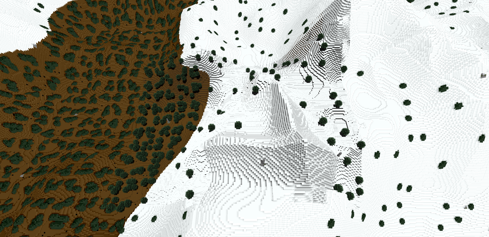
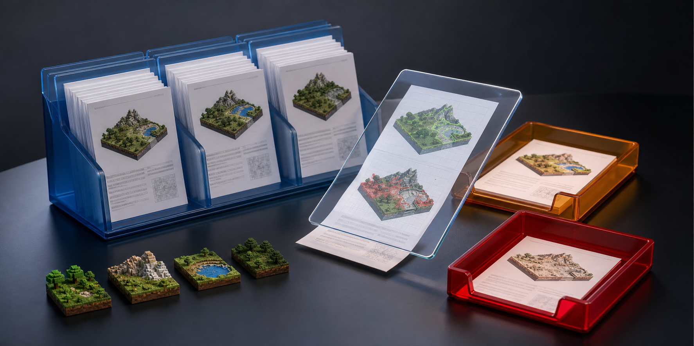

What are you here to do?
All {{ totalFeatures }} things this application does live in one of the five catalogues below, grouped by the job they belong to. Nothing is hidden behind a menu you have to already know about, and every catalogue opens a page that names everything in it, one line each.
Maps rendered on this computer and BlueMap servers somebody else runs, in one list. Opening either is the same action.
Put a finished render where other people can open it — GitHub Pages, this machine's own disk, or nowhere public at all.
The ways a world or a render is put somewhere that is not this one machine, plus the history kept beside the app.
Preferences, BlueMap's 154 configuration options, the interface's own behaviours — tabs, panels, the palette, the regex builder — and every article, offline.
{{ catTitle }}
{{ catBlurb }}

Make a map
Five questions. Nothing is written to disk until the last one is answered and you press start.
Point at a Minecraft save folder — the one holding level.dat. It is checked as soon as it is given, and the dimensions offered below come from the world itself rather than from a list of vanilla defaults. Java and Bedrock saves, and worlds as old as 1.12.2, are all read here.
The map id is what BlueMap writes into its own config and what appears in the viewer's map list. It has to be unique within this config folder; the name above it is only for people.
Every one of these has a working default. The speed dial is one control over several raw settings at once; leave it alone and the raw values in the options editor are used exactly as they are.
Draw the area to render over measured region bounds and the real overworld spawn. Every shape, ordered combination and subtraction behaves identically here, in the CLI and in Actions.
This machine, a Docker container, another machine over SSH, or GitHub's runners. One render plan, four resolutions.
Run this again on a timetable, by date, time, weekday and timezone.
A render interrupted by a closed app, a lost connection or a cancelled job keeps its finished tiles and picks up where it stopped. Always on for large worlds.
Every tile, the viewer's own copy of the web app, and the engine's working files go under this folder. It is never inside your Minecraft save.
Stated before anything starts, so nothing here is a surprise. Nothing has been written yet.
Start a project
A project is one file at the root of a Minecraft world, holding every map, storage and setting that world renders with. Starting one writes nothing until you save — it opens on BlueMap's own generated defaults so all {{ totalConfigKeys }} settings are there to read from the first second.
Nothing here is a path you have to type. Everything below was found on this machine, or fetches the world for you.
{{ projectName }}
unfold_more{{ nodeBlurb }}
{{ fd.doc }}
Render world · GitHub Actions
For a machine that cannot render a big world itself. A standard runner has 4 vCPU and nothing else to do, and this uses as many of them in parallel as the world needs. No Java, no BlueMap and no local rendering: your machine uploads the world and then waits.
Exactly the nine inputs Actions → Render world → Run workflow asks for.
The plan job measures the runner's free disk live with df and checks it against the render's own estimate before dispatching anything. Shard edges land on block 32k+2 so no shard boundary falls inside a region.
Advertising the upside alone is how somebody wastes an afternoon.
Two of the three ways a merge goes wrong produce a map that looks fine and is quietly incorrect, so each layer is merged on its own terms.
{{ jobTitle }}
{{ jobBlurb }}
Options editor
{{ optionsTabBlurb }}
{{ f.blurb }}
What pressing Save actually writes, named before it happens.
{{ s.blurb }}
Docked top, left, right or bottom. The choice is remembered, and every panel in the app keeps its own persisted, viewport-bounded position the same way.
Every search bar in this application has one, built the same way and behaving the same way, so a pattern learned in one place works in all of them.
Per-element overrides land as inline styles, so they outrank every other rule in the app — a theming feature that cannot theme its own application is incomplete.

What would actually go, named before it is asked for:
This exists only when you supply an explicit private file. There is nothing to upload here and nowhere public to upload it to: the file is yours, it stays private, and until it exists this application shows its original shipped wording everywhere and offers no vocabulary feature at all.
Rules are tried in order, top first. The first one whose window and gate both match wins; a gate that answers off falls through to the next rule rather than stopping. Home Assistant tokens stay in page-session memory and are never written to disk.
One setting, shared by every one of these applications rather than kept separately in each. It lives in the shared local application-data record, so turning it on here turns it on everywhere.
You can rename it. Every surface in every one of these applications then uses only the name you chose — the shipped name appears nowhere in any label, description, search result, notification or accessible name.
These do not become greyed-out buttons. They behave as if they were never installed — no control, no copy, no route, no palette or search result, no preview, no notification, no image, no code name, and no mention anywhere.
Everything you had chosen stays stored and comes back exactly as it was the moment the mode is turned off.
Anyone with this computer can turn it off by deleting the shared local application-data record. It is said here rather than left to be discovered, because claiming protection this does not give would be the actual failure. Use it to keep something out of the way, not to stop somebody determined.
Each language has its own level, and they move independently. Level 1 reads fully professional; level 5 is maximum playfulness. Safety-critical copy stays clear at every level.
Off by default, and only ever turned on by you. It speaks app events, never content, and it is not a screen reader — it yields to one.